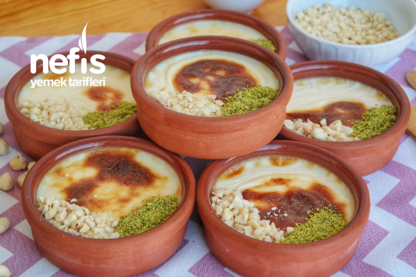

Fırında Sütlaç Nasıl Yapılır?
Tarifin Hikayesi

Tarif: Nefis Yemek Tarifleri
Sütlacı hepimiz bilir ve severiz. Ama fırında sütlacı bir başka severiz. Üzerindeki kızarmış kabuğunu yemesi eminim ki hepimize ayrı bir zevk verir. Siz de fırında sütlacın nasıl yapıldığını bilmiyor ve sürekli pastaneden yemek zorunda kalıyorsanız artık buna son vereceksiniz. Fırında sütlaç tarifimle pratik bir şekilde üzeri kızarmış sütlaçları kendiniz yapacaksınız. Sütün vitaminini almak ve tatlı ihtiyacını karşılamak için birebir olan fırında sütlacı misafirlerinize tatlı olarak sunabilirsiniz. Lezzetli mi lezzetli fırında sütlaç tarifimi denemeyi ve defterinize eklemeyi unutmayın. Deneyeceklere şimdiden afiyet olsun.
Malzemeler:
- 1 litre süt
- 1 su bardağı şeker
- Yarım su bardağı pirinç
- 3 yemek kaşığı buğday nişastası
- 1 paket vanilya
- 2 su bardağı su
- Yarım su bardağı süt (nişastayı açmak için)
Fırında Sütlaç Nasıl Yapılır?
- Fırında sütlaç için öncelikle pirinci haşlayalım. Pirinçleri güzelce yıkadıktan sonra 2 su bardağı su ile pişene kadar haşlayın. Çok az sulu kalacaktır.
- Diğer malzemeleri ekleyelim ve sütlacı pişirelim. Haşlanan pirinçlerin üzerine sütü, vanilyayı ilave edip kaynatın. Karışım kaynamaya başlayınca şekeri ve yarım su bardağı sütle karıştırdığınız 3 yemek kaşığı buğday nişastasını ilave ediniz. 10-15 dk. daha kaynatıp altını kapatın.
- Sütlaçları fırına sürelim. Fırın için uygun ısıya dayanıklı sütlaç kaselerine sütlaçlarınızı paylaştırın. Tepsinize soğuk su doldurun ve sütlaç kaplarını fırın tepsinize dizin (Tepsideki su sütlaç kaplarının yarısına kadar gelecek)
- Tepsiyi fırınınızın en üst rafına yerleştirin. 180 derecede, sütlaçlarınız kızarana kadar fırınlayın. Afiyet olsun.
Not: Toprak kase kullanacaksanız bu tarife göre 6 adet çıkıyor.